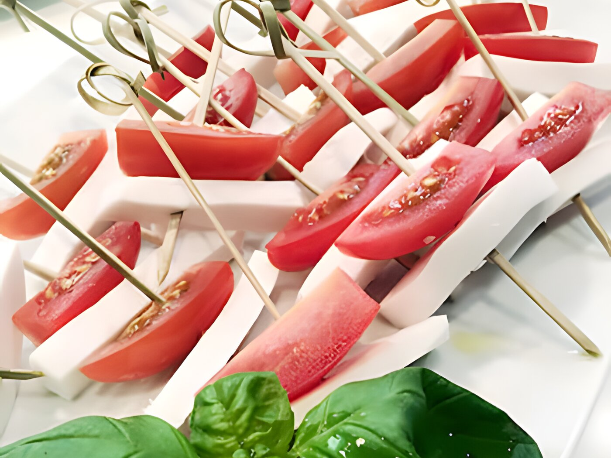

Plant-based
Vegan cheese alternatives
Cheese is a traditional product that is widely used in everyday cooking. As it is dairy based, traditional cheese is not accepted in a vegan diet. Cheese has a wide range of product.

Cheese is a traditional product that is widely used in everyday cooking. As it is dairy based, traditional cheese is not accepted in a vegan diet. Cheese has a wide range of product properties that are difficult to match on a plant base. The aim is to get a vegan version that is nice to eat on its own, sliceable, grateable, stretchable and can be melted in the oven.
As vegan cheese alternatives only consist of fat, water and dry components the taste is another issue that must be tackled
At KaTech we have developed different vegan cheese alternatives to match the dairy originals with their different product properties. You will find vegan solutions for gouda, mozzarella, feta and pizza cheese.
How we can help
Three ways into this product.
Whether you are building it new, fixing something that goes wrong in production, or looking for cost in the recipe.
New product
Vegan cheese alternative type gouda
As the original gouda, our vegan version has several product properties. It can be sliced, cut into chunks and is grate-able. The cheese can even be pickled in herbal oil without softening over time.
Vegan cheese type mozzarella
Traditional mozzarella has a very specific texture and appearance. Our vegan alternative has similar product properties. It has a fibrous texture, when pulled apart known from traditional mozzarella. It can be sliced and baked in the oven without the stringy effect and it tastes nice on its own. So "Mozzarella" with tomato and basil can be found again on the plates of vegans.
Vegan cheese type feta
Consumers have certain expectations when they think of feta cheese. A cheese with brittle texture in brine. At KaTech we have managed to develop a vegan "feta" with this brittle texture that can be marinated in brine without softening over time.
Vegan cheese type pizza
At KaTech, we have been working on a specific vegan cheese alternative for pizza. The focus was on the stretching effect of cheese during baking. Our vegan pizza cheese melts in the oven, giving a nice stretch that matches the dairy original perfectly.
Troubleshooting
The big challenge of producing vegan cheese alternatives is to use the right equipment that can give enough sheer. The dry matters of the products are very high, so a high shear is necessary to achieve a nice and even product.
Fine food manufacturers or manufacturers with high shear equipment could produce this product.
If you want to find out, whether you would be able to produce these products in your production site, please get in contact with us.
Cost optimisation
Whether you are looking at reducing fat in the product or you need to optimise your process costs, KaTech has a vast knowledge on how single ingredients react in combination. With our expertise, we can look at recipes and reduce costs significantly while keeping the quality of the final product.
If you want to find out more, please get in contact with us.
Plant-based
More in this area.
Plant-based burger patties
The challenge in developing plant-based burger patties is to achieve the right.
02Plant based cold cuts
Originally cold cuts are slices of cooked or cold meat, traditionally eaten in.
03Plant based fish alternatives
After developing meat alternatives it was now time to look how fish products can.
04Plant based fish cakes
The texture of fish cakes can vary considerably between countries. Our.
05Plant based fish fingers
When developing plant-based fish fingers, it was important to achieve the right.
06Plant based mince
Minced meat is used in many different popular dishes such as bolognese, lasagne.
Bring us the product.
Tell us what it has to do, how it is produced and where it currently fails. We will tell you what is possible.